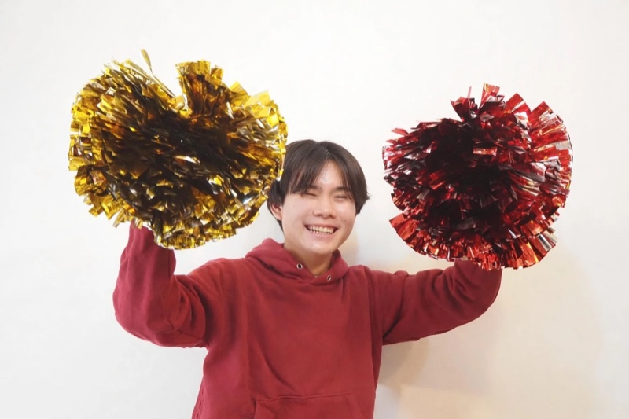

小助川 晴大
学生団体NEXY 代表 / ネルフィン株式会社 COO / ジンベエザメ株式会社 COO。
孫正義育英財団3期生、N高等学校BLP正規生、N高起業部ビジネスコンテスト2026 応募1,600名中優勝。
現在の肩書き
プロフィール
2008年、神奈川県横浜市生まれ。現在は富山県富山市在住。 9歳でロボット競技WROに出場し、史上最年少で世界7位を獲得。 孫正義育英財団3期生として選抜され、小学校卒業後にシンガポールへ単身留学。 中学2年でジンベエザメ株式会社を設立し、N高起業部ビジネスコンテスト2026では応募1,600名の頂点となる優勝を果たしました。
2026年2月、学生団体NEXYを設立。「やりたい」を、ひとりにしない。という理念のもと、挑戦する高校生・大学生のためのアントレプレナーシップコミュニティを全国で運営。 設立から半年で、累計1,204名が参加、連携企業15社、SNS累計160万インプレッションを記録しています。
同時並行で、ネルフィン株式会社・ジンベエザメ株式会社でもCOOを務め、プロダクト開発・事業運営に携わっています。 「学生の『やりたい』を、ひとりにしない」 —— このコンセプトのもとでNEXYを代表として運営しております。
年表
9歳でロボット競技WRO世界大会に出場。「地球温暖化を解決するロボット」を開発・英語プレゼンし、史上最年少で世界7位を獲得。同年、算数オリンピック キッズBEE で銅メダル。
孫正義育英財団の3期生として選抜される。Startup Jr. ソーシャルイノベーション部門で初代大賞を受賞。
渋谷QWSで小学生として初登壇。TBS「ニュースキャスター」「Nスタ」に出演。JCI World Congress 横浜で孫正義氏の次にプレゼンを担当。
クラウドファンディングで集めた34万円を貧困世帯の子ども支援に全額寄付。小学校卒業後、シンガポールへ単身留学。
中学2年で起業家としてジンベエザメ株式会社を設立。Learning Base 登壇、SOZOW FES ピッチなどに参加。
愛知県設楽町でのリクルート地方創生インターンに参加。教育サービス「ひきだしkids」をリリース。
ICC福岡・京都スタッフ、ワンダーメイクフェス登壇、Steez10代名鑑掲載。不登校児メンターとして延べ50名以上の学生をサポート。
学生団体NEXYを設立し代表就任。深夜の語り場 第1回を開催。N高起業部ビジネスコンテスト2026で応募1,600名中優勝。リクルート地方創生2024-25で最優秀賞(宮古島採択)。ネルフィン株式会社を設立しCOO就任。Tokyo Startup Gateway 3期生に選出。神奈川から富山へ単身移住。
基本情報
| 生年月日 | 2008年12月9日 |
|---|---|
| 出身 | 神奈川県横浜市 |
| 現在地 | 富山県富山市 |
| 学校 | N高等学校 (BLP 正規生) |
| 専門領域 | 学生コミュニティ運営 / 事業設計 / 若者エンパワーメント |
| 連絡先 | info@nexyhub.jp (NEXY窓口) |
メディア掲載・登壇歴（抜粋）
一緒にNEXYをつくる仲間を募集しています。
「何かに挑戦したい」「本気で語り合える仲間が欲しい」高校生・大学生の方へ。
フォームからご応募いただければ、ハルタから直接ご連絡いたします。